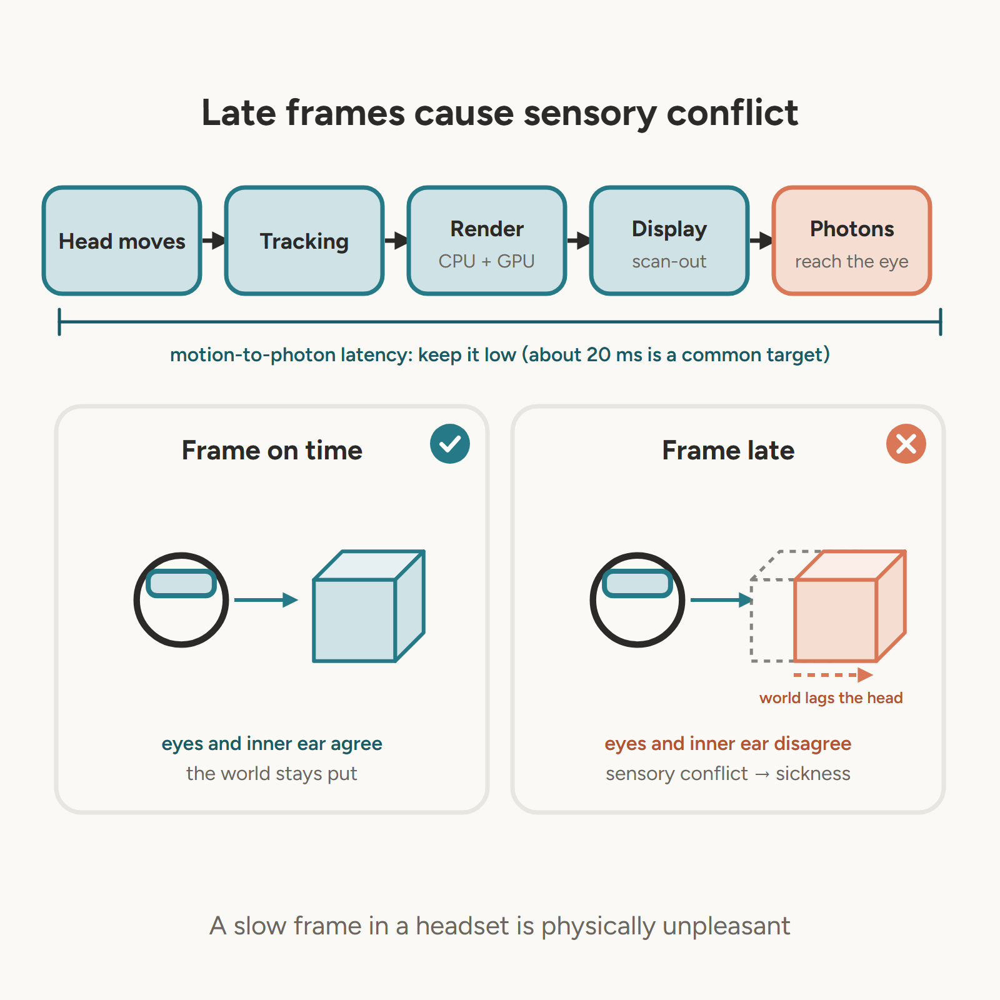
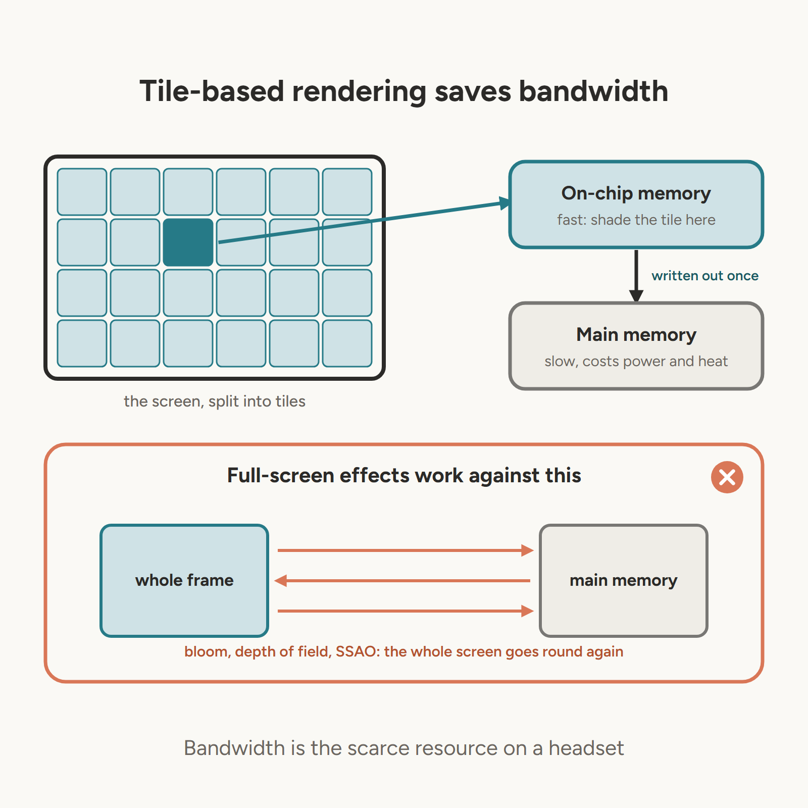
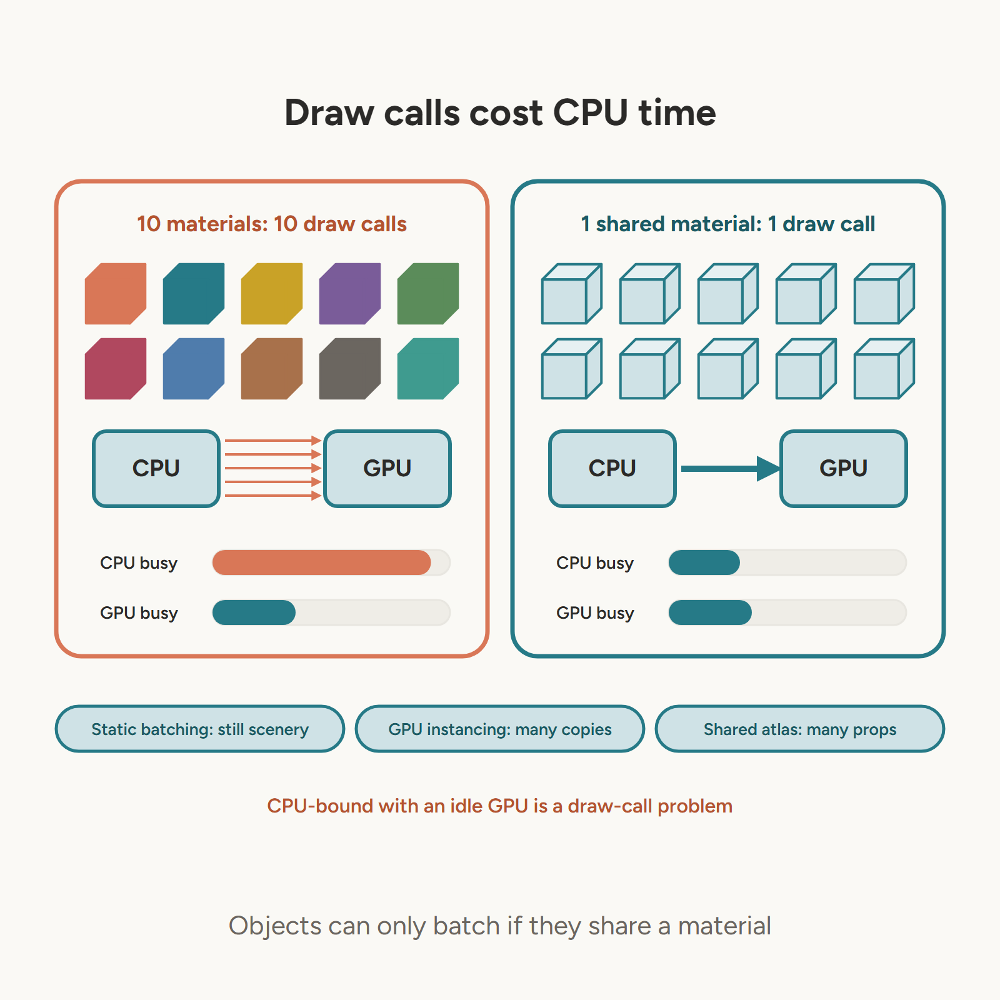
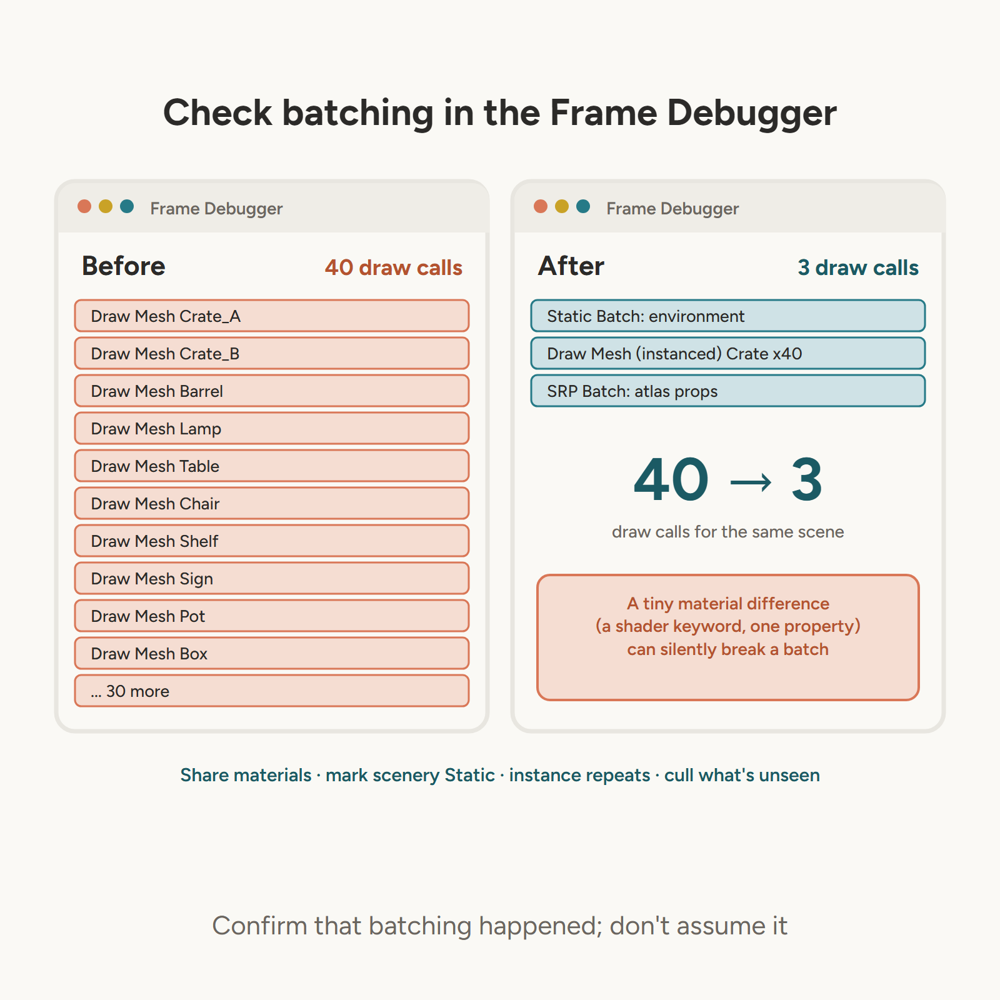
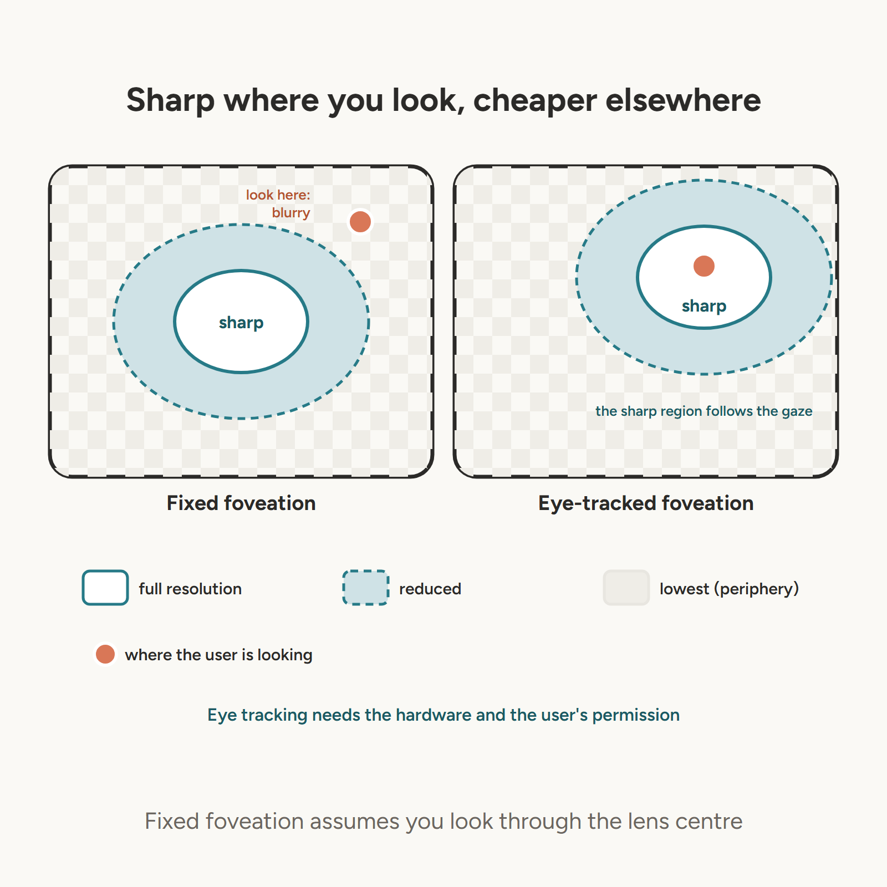
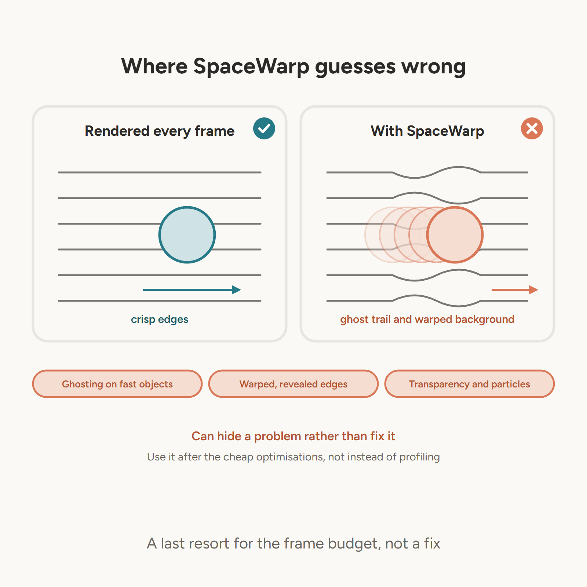
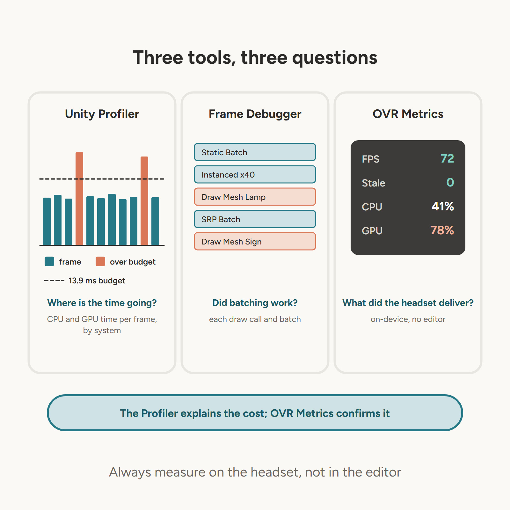
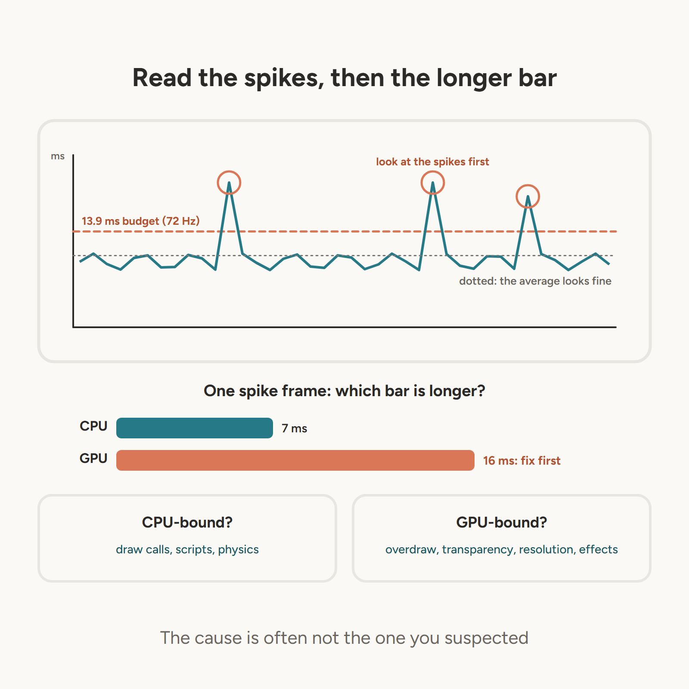

Week 11 Lecture Notes
Performance, Comfort & Optimisation
- In XR the frame budget is a comfort requirement: motion-to-photon latency and 72/90/120Hz refresh targets link directly to sensory conflict and simulator sickness.
- On the Snapdragon XR2’s tile-based mobile GPU, overdraw, transparency and full-screen effects are disproportionately expensive, and material count drives CPU cost through draw calls.
- Batching and GPU instancing cut draw calls, while foveated rendering and Application SpaceWarp each buy performance at the cost of their own artefacts.
- Profile methodically with the Unity Profiler and OVR Metrics: measure, change one thing, measure again, and be willing to cut content rather than ship something uncomfortable.
1 Overview
Duration: 1 hour
In XR, performance is not polish applied at the end. A dropped frame is a physiological event for the person wearing the headset, which makes the frame budget a comfort requirement and an accessibility requirement rather than a technical preference.
This session connects three things you have already met. The sensory conflict theory from Week 3 explains why late frames make people unwell. The interaction and feedback work from Weeks 4 to 10 explains what your scene is asking the hardware to do. This week supplies the third piece: a repeatable method for finding out what that is costing, and deciding what to change.
The session also prepares you for Assessment 3. A vertical slice that holds its frame rate will be rated more comfortable and more usable in your SSQ and SUS testing than a larger one that stutters.
2 Learning Objectives
By the end of this lecture, students will be able to:
- Relate frame timing directly to simulator sickness risk
- Read a profiler capture and locate the actual bottleneck rather than the suspected one
- Prioritise optimisations by measured cost rather than by intuition
3 1. The Frame Budget as a Comfort Requirement
3.1 1.1 Motion-to-Photon Latency
Motion-to-photon latency is the time between a head movement and the moment the matching pixels reach the eye. It includes tracking, the CPU and GPU work to render the frame, the display scan-out and the display’s own response time. Every stage adds to it.
The vestibular system reports head movement almost instantly. If the picture lags behind, the visual and vestibular senses disagree about how the head has moved. This is the sensory conflict described in Week 3, and it is one of the main accepted explanations for simulator sickness. The VR literature has long suggested that motion-to-photon latency needs to stay low, with figures of around 20 ms often quoted as a target (Abrash, 2014; Jerald, 2015). The exact threshold varies between people, so treat it as a design goal rather than a pass mark.
This is what separates XR from a flat-screen game. A slow frame on a monitor is ugly. A slow frame in a headset is physically unpleasant, and the user cannot look away from it because the display moves with their head.

3.2 1.2 Refresh Targets and Frame Time
The refresh rate sets the frame time: the window in which the CPU and GPU must finish all their work for one frame. It is simply 1000 ms divided by the refresh rate.
| Refresh rate | Time per frame | Notes |
|---|---|---|
| 60 Hz | 16.7 ms | Common on flat screens; below the usual XR targets |
| 72 Hz | 13.9 ms | A common baseline for standalone headsets |
| 90 Hz | 11.1 ms | A smoother option where the hardware can sustain it |
| 120 Hz | 8.3 ms | Smoothest, but leaves the least time for work |
Two points follow from the table:
- A higher refresh rate is smoother but harder to hit. Choosing 120 Hz instead of 72 Hz cuts the time budget from 13.9 ms to 8.3 ms. The same scene has to cost about 40% less.
- The target is a design decision. Choose it at the start of the project, because it determines what you can afford to put in the scene. Do not discover it in the last week.
A scene that averages 9 ms per frame at a 72 Hz target (13.9 ms) can still be uncomfortable if a few frames take 20 ms. Users feel the spikes, not the average. When you read profiler output later in this session, always look at the worst frames first.
3.3 1.3 What Happens When a Frame Is Late
When the app does not deliver a new frame in time, the headset runtime does not simply show a blank screen. It typically reprojects the previous frame, using the latest head pose to shift the image so that head rotation still feels correct. This is sometimes called timewarp. You can see the Meta documentation for the specific mechanism on your device.
Reprojection is a safety net, not a fix:
- It corrects for head rotation, but cannot correct for things that moved on their own: animated characters, moving objects and your hands.
- The result is a stale frame: the same content shown again. Stale frames appear as judder in anything that moves in the scene.
- Repeated stale frames are exactly the condition that creates sensory conflict.

People differ widely in how sensitive they are to latency and judder. A frame rate that one person tolerates may make another person unwell within minutes. Treat a stable frame rate as part of designing for the most sensitive users, in the same way that you provide comfort options for locomotion (Week 5).
4 2. How a Mobile GPU Renders
4.1 2.1 Tile-Based Rendering on the Snapdragon XR2
Standalone headsets such as the Meta Quest range use a Qualcomm Snapdragon XR2 chip. Its GPU is a tile-based mobile GPU, designed around a constraint that desktop GPUs mostly avoid: memory bandwidth is expensive in power and heat, and the headset sits on the user’s face with a battery and no fan.
A tile-based GPU works in the following way:
- The screen is divided into small tiles.
- The GPU works out which geometry falls in which tile.
- Each tile is shaded in fast on-chip memory.
- The finished tile is written out to main memory once.
This saves a great deal of bandwidth, because pixels are not repeatedly read from and written back to main memory while the tile is being built.
Some sources call this “tile-based deferred rendering” (TBDR), a term which comes from GPU designs that defer shading until visibility has been resolved. Adreno GPUs, as used in the XR2, are more often described as tile-based with a binning pass. The names differ between vendors, but the practical consequences for your project are the same, and those are what this session focuses on.
The design works well for simple, opaque scenes. It works against you whenever something forces extra reads and writes of the whole screen.

4.2 2.2 What Is Expensive on This Hardware
| Cost | Why it hurts on a tile-based GPU |
|---|---|
| Overdraw | The same pixel is shaded several times by stacked surfaces, so shading work is wasted on pixels the user never sees |
| Transparency | Transparent surfaces cannot be rejected early by the depth test, so every layer behind them is shaded as well |
| Full-screen effects | Bloom, depth of field, screen-space ambient occlusion and similar passes read and write the whole frame through main memory, which defeats the tile-based design |
| Real-time shadows and lights | Extra passes, and extra shading work for every pixel each light touches |
| High resolution render targets | A headset renders two views, one per eye, so the pixel count is already high before any effects are added |
Typical offenders in XR scenes include particle systems, foliage cards, glass, large UI panels and fog volumes. All of them stack transparent surfaces in front of the user’s eyes.
On a standalone headset, begin with opaque materials, baked lighting and simple shaders, and add expensive features only when you have measured that you can afford them. Post-processing that looks fine on a desktop GPU can halve the frame rate on a headset.

4.3 2.3 Two Views, One Frame
A headset has to draw the scene twice, once for each eye. Naively, that doubles the CPU work as well as the GPU work. Unity’s XR support can render both views in a single pass (Multiview on Android, or single pass instanced rendering), submitting the work for both eyes together. This is normally the right setting for standalone headsets. Check that it is enabled in your XR plug-in settings, because the alternative costs far more.
4.4 2.4 Heat and Sustained Performance
A standalone headset is a battery-powered computer worn against the face. It cannot dissipate heat as a desktop can, so it manages temperature by throttling the CPU and GPU clock speeds. A scene that runs well for the first two minutes can slow down once the device warms up.
The consequence for testing is simple: profile after the headset has been running for a while, not just straight after a cold start. If you are running user testing for Assessment 3, it matters that the frame rate holds across a whole session.
5 3. Draw Calls and Batching
5.1 3.1 What a Draw Call Is
A draw call is a request from the CPU to the GPU: draw this mesh with this material. Each one has CPU overhead, for validating state, setting up resources and issuing the command. A scene with thousands of small objects can therefore be CPU-bound even though the GPU has plenty of spare capacity.
This is why material count matters. Objects can only be combined into one call if they share a material. Ten objects with ten different materials usually cost ten calls. Ten objects with one shared material can cost one.

5.2 3.2 Batching and Instancing
| Technique | What it does | Trade-off |
|---|---|---|
| Static batching | Combines non-moving meshes that share a material into larger meshes at build time | Uses more memory, because combined mesh data is stored |
| Dynamic batching | Combines small moving meshes at runtime | The CPU has to combine them each frame, and it only applies to meshes with few vertices, so it often saves little |
| GPU instancing | Draws many copies of the same mesh and material in a single call, with per-instance data such as position and colour | Only works for the same mesh and material |
| SRP Batcher (URP) | Reduces the CPU cost of switching between materials that use the same shader | Needs a compatible shader and the Scriptable Render Pipeline |
The lesson is that these are not interchangeable. Choose the technique based on what the objects are:
- Scenery that does not move: mark it Static so Unity can batch it.
- Many copies of one object that may move (pickups, bricks, trees): use GPU instancing.
- Many different props: give them a shared texture atlas and material, so they can batch at all.
You will see numbers quoted online for how many draw calls a headset can handle. Treat them with caution. The real limit depends on the scene, the shaders, the render pipeline and the device. Measure on your own headset rather than relying on a figure.
5.3 3.3 Reducing Draw Calls in Practice
A short checklist for your own project:
- Share materials. Use one atlas texture for many props instead of one material for each.
- Mark non-moving scenery as Static.
- Use GPU instancing for repeated objects.
- Remove what the user cannot see. Use occlusion culling and keep distant detail low with levels of detail (LODs).
- Check the result in the Frame Debugger. Batching does not always happen when you expect it to. A material difference too small to see (a different shader keyword, a property change) can silently break a batch.
The last step is the important one. Confirm that batching worked, and do not assume it did.

6 4. Foveated Rendering and SpaceWarp
Batching and instancing reduce cost without changing what the user sees. The two techniques in this section are different: each buys performance by deliberately reducing quality, and each introduces its own artefacts. They are trade-offs, so use them knowingly.
6.1 4.1 Foveated Rendering
The eye sees sharply only across a small central region, the fovea. Detail away from the point of gaze is perceived poorly. Foveated rendering exploits this by shading the periphery at a lower resolution and keeping the centre sharp, which reduces GPU work.
There are two main forms:
- Fixed foveated rendering (FFR): the high-quality region is fixed at the centre of each lens. It assumes the user is looking roughly straight ahead through the middle of the lens, which is true much of the time because users tend to turn their heads rather than their eyes.
- Dynamic, or eye-tracked, foveated rendering (ETFR): the high-quality region follows the user’s gaze. It needs eye tracking hardware, such as that in the Meta Quest Pro, and the user’s permission to use it. Because it knows where the user is looking, it can make the sharp region smaller and save more (see the eye tracking material from Week 4).
| Fixed | Eye-tracked | |
|---|---|---|
| Saving | Moderate, always on | Larger, because the sharp area can be smaller |
| Needs | Any supported headset | Eye tracking hardware and user permission |
| Artefact | Blocky or shimmering edges in the periphery, visible when the user looks off-centre | Visible if the tracking lags behind a fast eye movement |
In Unity, foveation is set through the Meta XR integration, typically with a level (low to high). Higher levels save more and are more visible.
Gaze data can reveal attention, interests and even health information. If your build uses eye-tracked foveation, consider carefully what data is collected, whether it leaves the device, and how the user consents. This links to the consent material you used in your own testing.

6.2 4.2 What Foveation Costs
Foveation is not free. The artefacts show up first in:
- Text and user interface elements near the edge of the view
- Fine patterns and high-contrast edges, which can shimmer
- Anything the user looks at off-centre, in the case of fixed foveation
Stronger settings save more GPU time and show more artefacts, so choose the level by testing on the device, with real users. A setting that is invisible to you after ten minutes of development may be obvious to a first-time user.

6.3 4.3 Application SpaceWarp
Application SpaceWarp (ASW) is a Meta technique that lets the app render at half the display’s refresh rate. For example, the app renders at 36 frames per second, while the headset still refreshes at 72 Hz. The system synthesises the in-between frames from the app’s motion vectors (how things moved) and depth (how far away they are).
The benefit is large: roughly twice the time per rendered frame. It is the largest single performance trade available on Quest, and the reason it exists is to let developers spend more time per frame on richer content.
It does, however, place requirements on the app. The app has to supply correct motion vectors and depth buffers, and any object without them (or with incorrect ones) will not be synthesised correctly.

6.4 4.4 What SpaceWarp Costs
SpaceWarp is a synthesis, and so the system is guessing what the missing frames should look like. The guesses go wrong in predictable places:
- Ghosting and smearing around fast-moving objects
- Warping at edges, where the system must guess what was hidden behind a moving object
- Poor results with transparency and particles, and with anything that lacks correct motion vectors
- A little extra latency, since it works from a frame that has already been rendered
An artefact that is mildly distracting on a flat screen can be more noticeable, and more uncomfortable, inside a headset. It also has a subtler risk: it can hide a problem rather than fix it. If the scene is badly optimised, SpaceWarp may keep the headline frame rate up while the experience looks worse.
Use SpaceWarp when you have already done the cheap optimisations from Sections 2 and 3, have measured what is left, and still need more time per frame. It is not a substitute for profiling.

6.5 4.5 Choosing Between the Options
| If you are… | Consider first | Because |
|---|---|---|
| GPU-bound by pixel cost | Fewer transparent layers, simpler shaders, lower render scale | These reduce the work without visible artefacts |
| GPU-bound and still over budget | Fixed foveated rendering | Moderate saving, low risk if tested |
| Over budget on both CPU and GPU, with correct motion vectors | Application SpaceWarp | It gives twice the time per frame, but with synthesis artefacts |
| CPU-bound by draw calls | Batching, instancing, shared materials | Foveation and SpaceWarp do not reduce draw call overhead in the same way |
The table reflects the key principle of this session: the right optimisation depends on where the bottleneck is, which is why the next section is about finding it.
7 5. A Profiling Methodology
7.1 5.1 Measure, Change One Thing, Measure Again
The most common mistake in optimisation is to improve what you suspect rather than what you have measured. Intuition is often wrong, and effort spent on the wrong thing is wasted, or even harmful because it adds complexity to the project.
Use this loop:
- Set a target. Choose the refresh rate and the frame time you need.
- Measure a baseline on the headset, not in the editor.
- Find the bottleneck. Is the frame CPU-bound or GPU-bound?
- Change one thing.
- Measure again and compare with the baseline.
- Keep the change if it helped. Revert it if it did not.
Two habits make this work:
- Change only one thing at a time. If you change five things and the frame rate improves, you do not know which change did it, and one of them may have made things worse.
- Keep an optimisation log. Write down each change and its measured effect. A simple table in the project repository is enough. It is evidence for your Assessment 3 report as well.
| Change | Before (ms) | After (ms) | Keep? |
|---|---|---|---|
| Enable static batching on environment | 15.2 | 13.1 | Yes |
| Replace particle fog with baked skybox | 13.1 | 10.4 | Yes |
| Raise foveation to high | 10.4 | 10.0 | No: periphery visibly blocky |
Performance in the Unity editor tells you very little about performance on the headset. A desktop GPU hides exactly the problems that a mobile GPU exposes. Always measure on the device.

7.2 5.2 The Tools
| Tool | What it shows | Use it to |
|---|---|---|
| Unity Profiler | CPU and GPU time per frame, broken down by system, plus memory allocations | Find which scripts, systems or rendering stages consume the frame |
| Frame Debugger | Each draw call and batch, in the order they are issued | Check that batching worked, and spot where overdraw comes from |
| OVR Metrics Tool | On-device frame rate, stale frames, CPU and GPU utilisation | Measure the real headset, without the overhead of the editor |
Used together, the Unity Profiler and OVR Metrics answer different questions. The Profiler explains where the cost is. OVR Metrics confirms what the headset actually delivered.
To use the Unity Profiler on a Quest, build a development build with Autoconnect Profiler enabled, then attach to the running app over USB or a wireless connection. Remember that profiling has its own overhead, so use OVR Metrics for the final numbers.

7.3 5.3 Reading a Capture
A profiler capture contains a large amount of information. This sequence keeps you pointed at the right part of it:
- Look at the longest frames, not the average. Comfort is lost in the spikes.
- Compare the CPU and the GPU. Which has the longer bar for that frame? Fix the longer one first. Speeding up the shorter one achieves nothing, because the frame cannot finish until both are done.
- If the CPU is the bottleneck, look at draw calls, scripts and physics.
- If the GPU is the bottleneck, look at overdraw, transparency, render resolution and effects.
- Expect to be surprised. The cause is often not the one you suspected.
| Symptom | Likely cause | First thing to check |
|---|---|---|
| Regular spikes every few seconds | Garbage collection, caused by allocating memory every frame | The Profiler’s GC Alloc column; remove per-frame allocations in Update |
| High CPU time, low GPU time | Too many draw calls, or heavy scripts or physics | Batch count in the Frame Debugger; physics object count |
| High GPU time, low CPU time | Overdraw, transparency, expensive shaders or effects | Particle systems, glass, post-processing, render scale |
| Smooth at first, then gets worse | Thermal throttling | Profile after the headset has warmed up |
| Fine in the editor, poor on the device | Editor hides mobile GPU costs | Measure on the device, not the editor |
Before you open the profiler, write down which part of your Assessment 3 prototype you think is the most expensive. Then compare your prediction with the capture. The difference between the two is the best argument for measuring that you will find.

7.4 5.4 A Worked Example
A student has built a small arcade game for a 72 Hz target (13.9 ms). In OVR Metrics, the frame rate keeps dropping to the mid-50s during play, and the stale frame count is climbing.
- Baseline. The Profiler shows the GPU taking around 17 ms in busy moments, while the CPU takes about 8 ms. The frame is GPU-bound, so optimising scripts would not help.
- Hypothesis. The student suspects the large scene geometry. The Frame Debugger shows that the environment is already batched, so this is probably not the cause.
- Finding. A single smoke particle system in front of the player covers most of the screen with overlapping transparent layers. This is heavy overdraw.
- Change one thing. Reduce the particle count and the particle size, leaving everything else alone.
- Measure again. GPU time falls to about 12 ms and the stale frames stop.
The student’s first guess was the environment. The measurement pointed to one particle effect. The fix cost almost no visual quality, and it was found in minutes, not days.
8 6. Cutting Scope
Sometimes the cheap fixes are not enough. If the scene is still over budget after batching, simpler materials and sensible use of foveation, the correct optimisation is to reduce what the scene asks for:
- Fewer objects, and simpler materials
- A smaller play space
- Fewer simultaneous effects, lights and particles
- Lower-detail models at a distance
- A lower refresh rate target, chosen deliberately and early
This is a design decision and an accessibility decision. It is not a failure. A simpler experience that holds its frame rate is better than a rich experience that makes people feel unwell, because a user who has to stop is not experiencing your design at all.

8.1 Scope and Assessment 3
This connects directly to the advice in the Assessment 3 brief: depth over breadth. A polished vertical slice that holds a steady frame rate will:
- Score better in your SSQ results, because stable frames cause less sensory conflict (SSQ)
- Score better in your SUS results, because a stuttering scene reads as a badly made one (SUS)
- Leave you time to polish the core interaction, because you are not spending the final weeks fighting performance problems
Performance problems also contaminate your evaluation data. If a participant reports nausea, you will need to know whether it came from the interaction design or from dropped frames. Record your frame rate during testing so you can tell the difference.
9 Summary
Optimisation in XR is not about squeezing out the last frame; it is about staying above a threshold below which the experience becomes physically unpleasant. Late frames cause sensory conflict, and sensory conflict causes simulator sickness. On a tile-based mobile GPU, overdraw, transparency and full-screen effects are the expensive items, and material count drives CPU cost through draw calls. Batching and instancing reduce cost without a visible penalty, whereas foveated rendering and Application SpaceWarp buy performance at the price of artefacts. Whichever you choose, measure first on the headset, change one thing at a time, and measure again. Be willing to cut content rather than ship something uncomfortable.
10 Self-Check Questions
- Calculate the frame time in milliseconds for 72 Hz, 90 Hz and 120 Hz. Why does choosing a higher refresh rate make optimisation harder?
- Explain in your own words why a late frame can cause simulator sickness. Which theory from Week 3 does it relate to?
- Why is looking at the average frame time not enough to judge whether a scene is comfortable?
- Why are transparent surfaces more expensive than opaque ones on a tile-based mobile GPU?
- Ten props in a scene each use a different material and are causing a CPU bottleneck. What would you change, and how would you confirm that it worked?
- Describe one situation where GPU instancing is appropriate and one where it is not.
- Compare fixed foveated rendering and eye-tracked foveated rendering. What does each save, and what does each cost?
- What does Application SpaceWarp do, and what artefacts does it introduce? Why is it described as a last resort?
- A profiler capture shows the CPU taking 7 ms and the GPU taking 16 ms in a 72 Hz scene. Which should you optimise first, and why?
- Why should you change only one thing at a time when optimising?
- Why is performance in the Unity editor an unreliable guide to performance on a Quest?
- For your own Assessment 3 prototype, identify the most likely performance bottleneck and describe what you would cut first if you had to.
11 References
- Abrash, M. (2014) What VR could, should, and almost certainly will be within two years. Steam Dev Days keynote.
- Jerald, J. (2015) The VR Book: Human-Centered Design for Virtual Reality. ACM Books / Morgan & Claypool.
- Kennedy, R.S., Lane, N.E., Berbaum, K.S. & Lilienthal, M.G. (1993) “Simulator sickness questionnaire: an enhanced method for quantifying simulator sickness.” International Journal of Aviation Psychology, 3(3), 203-220.
- LaViola, J.J. (2000) “A discussion of cybersickness in virtual environments.” ACM SIGCHI Bulletin, 32(1), 47-56.
- Meta. Meta Quest developer documentation: performance, foveated rendering, Application SpaceWarp and OVR Metrics Tool. developers.meta.com
- Unity Technologies. Unity Manual: Profiler, Frame Debugger, batching and GPU instancing documentation. docs.unity3d.com